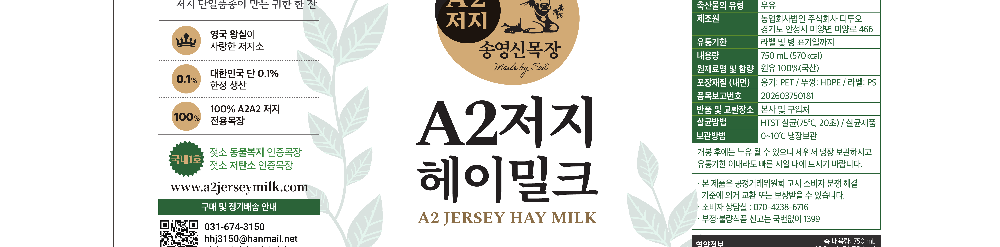
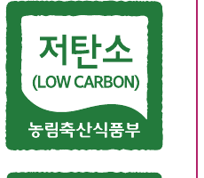
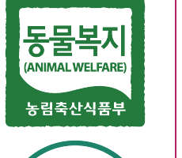
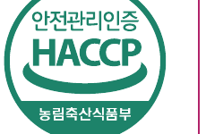

유지방 5%,
황금빛 깊이.
일반 백색우유(3.5% 내외)보다 진한 저지소 특유의 유지방 5%. 베타카로틴이 만든 자연스러운 황금빛이 그대로 컵에 옮겨집니다.
좋은 우유는 섬세한 설계에서 시작됩니다.
가족이 함께 마실 한 병을 위해, 더 큰 단위에 맞는 보틀과 베이스 구조까지 다시 설계했습니다.

여러 잔에 나눠 마셔도 신선함이 유지되는 이중 안전 설계.
큰 잔에도 부드럽게, 깔끔한 따름을 위한 여유로운 입구.
국산 A2/A2 저지 원유만으로 채운 750ml 한 병.
저온 충전과 빠른 냉각으로 마지막 한 잔까지 본연의 맛.
고급 소재와 친환경 인쇄로 자연의 가치를 담았습니다.
큰 용량에도 안정적인, 빛과 충격을 막는 튼튼한 바디.
원유의 원산지와 영양 정보를 투명하게 표기.
식탁 위에서도 흔들림 없는 넓은 바닥 — 누유를 줄이는 세워두기 구조.

젖소의 복지와 건강을 고려한 사육 환경을 인증합니다.
동물복지-10-30-6-1호생산 전 과정의 탄소 배출을 줄여 환경 영향을 최소화.
제 2024-2-068호원유 생산부터 유통까지 위해 요소를 사전에 관리.
제 2016-0-0718호경기도가 인증하는 동물복지 기준을 충족한 축산 농가.
가축행복-23-2-2호분리배출이 용이하도록 재활용 가능한 PET 용기를 사용.
제품 정보, 생산 스토리, 인증 내역을 한눈에 확인.
제품 식별 및 유통 관리를 위한 표준 코드.
원재료, 제조원, 보관 방법 등 모든 정보를 명확하게 공개.
Different Protein
Premium Jersey
Hay Feeding
Animal Welfare
Low Carbon
Regenerative Agriculture
Food Safety
Certified Care
From the Land Up
The Taste — 식탁 위의 풍요
가족이 둘러앉는 식탁, 컵을 채우면 다섯 잔이 되는 단위. 처음 한 모금엔 풀의 향, 두 번째 잔엔 황금빛 깊이,
마지막 한 컵엔 여백이 남습니다.
750ml — 한 주를 함께 보내기에, 가장 송영신스러운 단위입니다.
Hay Milk · 750ml
750mL — 일반 1L 우유보다 가볍고, 200ml 한 팩보다 깊은 단위. 식탁 위에 그대로 두고 나누기에 맞고, 한 주를 채우기에 부족하지 않은 ‘딱 한 단계 위의 일상’입니다.
Why this 750ml
일반 백색우유(3.5% 내외)보다 진한 저지소 특유의 유지방 5%. 베타카로틴이 만든 자연스러운 황금빛이 그대로 컵에 옮겨집니다.
발효 사료(사일리지) 없이 건초만 먹은 저지소. 한 잔을 마시면 풀이 머금은 고소함이 마지막 한 모금까지 따라옵니다.
한 컵 약 150ml × 5 — 가족이 둘러앉아 한 번에 다 비우기 좋은 단위. 한 끼의 우유, 그리고 다음 날 아침 한 잔의 여유.
The Heritage — 한 병의 무게
Royal Heritage
Limited Production
Single-Breed Farm
National First Certified
Official Certifications

저탄소
Low Carbon · MAFRA

동물복지
Animal Welfare · MAFRA

HACCP
Safety · MFDS
가축행복
Happy Farm
Product Label
| 나트륨 Sodium | 44 mg 2% |
|---|---|
| 탄수화물 Carbs | 5.0 g 2% |
| 당류 Sugars | 3.3 g 3% |
| 지방 Fat | 4.5 g 8% |
| 트랜스지방 Trans | 0 g 0% |
| 포화지방 Saturated | 2.5 g 17% |
| 콜레스테롤 Cholesterol | 15 mg 5% |
| 단백질 Protein | 3.8 g 7% |
% 1일 영양성분 기준치(2,000 kcal)에 대한 비율이며, 개인 필요 열량에 따라 다를 수 있습니다.
· 본 제품은 0–10℃ 냉장보관이 원칙입니다. 개봉 후에는 누유될 수 있으니 반드시 세워서 냉장 보관하시고, 유통기한 이내라도 빠른 시일 내에 드시기 바랍니다.
· 본 제품은 공정거래위원회 고시 「소비자 분쟁 해결 기준」에 의거 교환 또는 환불받으실 수 있습니다.
· 부정·불량식품 신고는 국번없이 1399, 소비자상담실 070-4238-6716.
A Moment
— Song Yeong Shin Farm, A2 Jersey Hay Milk